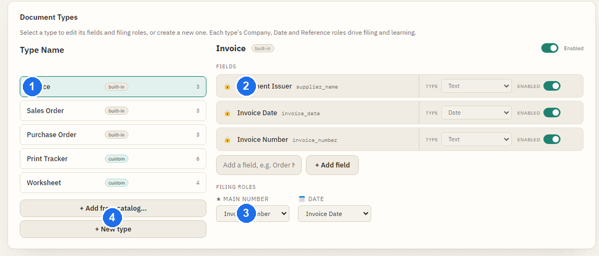

Document Types & Fields
A document type is a kind of paperwork you file — an Invoice, a Sales Order, a Delivery Note. Each type has its own set of fields (the details to capture). This page is about setting those up.
Setting up document types and fields is an admin task, in Settings → Document Types. Everyone else just sees the results when reviewing documents.

Add from catalog
The quickest way to set up a new type. Open Settings → Document Types → Add from catalog…, tick the ones you file, and Scan Finder creates each with sensible fields already in place — no setup needed.
- Ready-made types include Purchase Invoice, Sales Invoice, Remittance Advice, Credit Note, Delivery Note, Statement, Receipt and Quote.
- Adding the same type twice does nothing — it won't create duplicates.
- Catalog types are fully removable later if you decide you don't need them.
Your own fields
Beyond the built-in details, you can add any field you care about — say a PO number or a VAT number. Give it a name, then pick the type so Scan Finder knows what a good value looks like. These are examples of the types available:
| Type | Good for |
|---|---|
| Text | Names, descriptions, anything free-form. |
| Date | Any date — tidied to a consistent format. |
| Currency | Amounts and totals. |
| Number | Plain numbers (counts, quantities). |
| Reference code | Mixed letter/number references (order, job, account codes). |
| Email addresses. | |
| Website | Web addresses. |
| Percentage | Rates and percentages. |
| Postcode (UK) | UK postcodes. |
| VAT number (GB) | UK VAT registration numbers. |
| IBAN | International bank account numbers. |
| MAC address | Hardware addresses with colons, e.g. D4:F0:C9:25:9B:64. |
| IP address | IPv4 or IPv6 addresses, e.g. 192.168.1.200. |
More types may be available than shown here — the list in Settings is the full set.
The three fields every type has
Every document type always has three locked fields (🔒):
- Document Issuer — the company the document is from (or the recipient, on your own outgoing documents).
- Date — the document's date.
- Reference — its main number (invoice number, order number, and so on).
These three drive how documents are named and foldered, and how Scan Finder learns each supplier — so the field can't be deleted, disabled or renamed. You can, of course, always correct the value on any document; that's what teaches Scan Finder to read it better next time.
Renaming a field is safe
Prefer "Customer reference" to "Reference"? Rename it. The label is simply what you see — Scan Finder keeps reading the field correctly because its behaviour is tied to the field's role, not to the words on the label. Rename freely; nothing breaks.
How Scan Finder recognises a type
When a document arrives, Scan Finder reads the title printed at the top and matches it to one of your types — a page headed Invoice becomes an Invoice, a page headed Worksheet a Worksheet. The match is to the type's name, so it helps to name a type the way it's actually printed on your documents.
If the printed heading differs from the name — your documents say “Work Sheet” but the type is “Worksheet”, or some say “Job Sheet” — add those wordings in the type editor's Also appears as box. A page headed with the name or any alias is filed as this type, so you never have to rename anything to match the print.
- Matching ignores capitals and spacing (“WORK SHEET” is the same as “Work Sheet”) but it's exact, not a guesser — a short form like “W-Sheet” only works if you add it as an alias.
- An alias can't be the same as another type's name (Scan Finder will tell you), and very short or number-only aliases are skipped — they'd match too much else.
- One supplier, several kinds of document? If a supplier sends invoices, statements and worksheets on the same letterhead, Scan Finder tells them apart by the title on the page — so making each type's name (or an alias) match the print is what keeps them filing to the right place.
- The first one or two may need a tidy-up. A brand-new type is being seen for the first time; confirm a few and Scan Finder learns the layout and reads that supplier's documents automatically from then on.
Once your types are set up, see how documents are named and filed in Search & Filing.